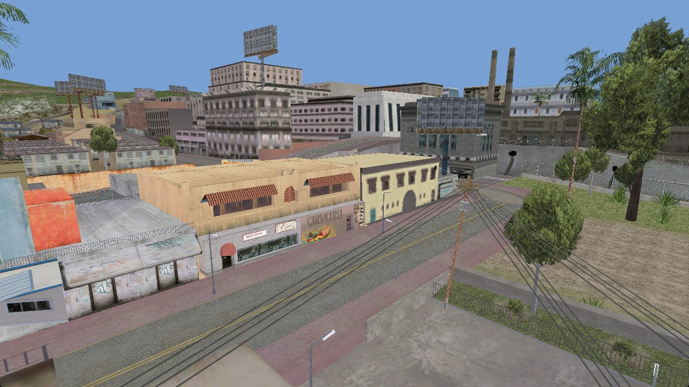
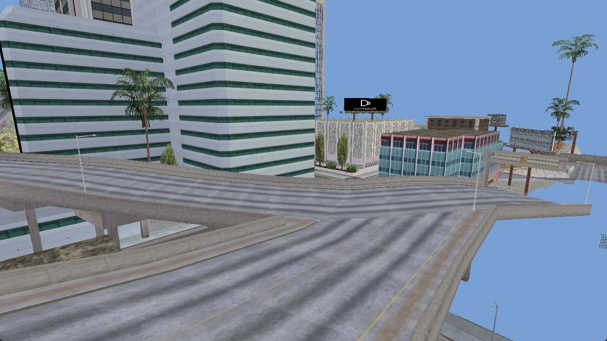
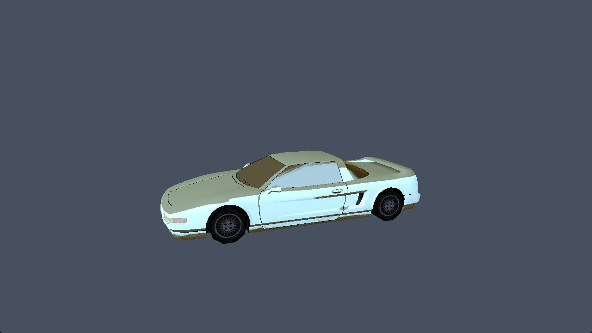
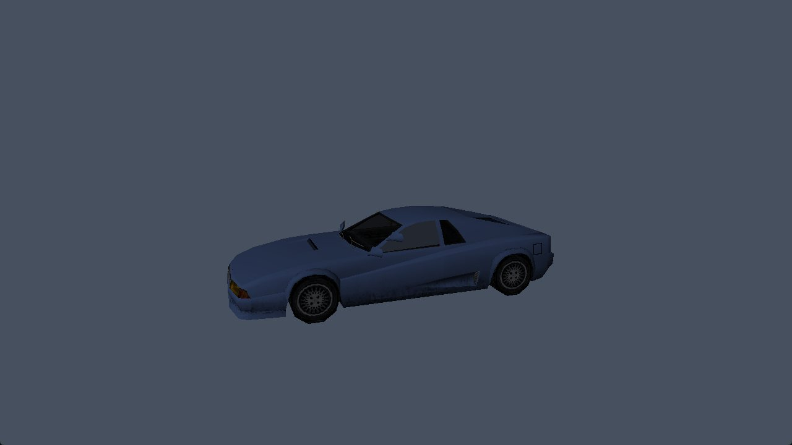

Mission log
What runs today, and what is still ahead. Early-stage: this is a data and streaming layer with viewers, not a playable game.
DoneData loading
IMG v2 archives, gta.dat/default.dat, every IDE section (objects, vehicles, peds, weapons, animated objects, TXD parents), text and binary IPL, RenderWare 3.6 DFF/TXD. All 14 800 models and 3 000 texture dictionaries of the stock game parse without errors.
DoneStreaming slots
The slot layout follows CStreaming::LoadCdDirectory as decompiled from the executable: TXD, COL, IPL, DAT, IFP, RRR and SCM id ranges, a 5000-slot TXD pool, and the model pool sizes from CPools::Initialise.
DoneRequest / load / remove
A synchronous streamer: requesting a model also requests its TXD and parents, resources are read from the archives and released again when the last instance goes away.
DoneStreamed world viewer
sa_stream flies a free camera over the whole map. Models and textures are pulled in around the camera, LOD stand-ins appear at a distance, and everything is dropped again behind you.
PartialVehicles
Body paint from carcols.dat, wheels attached to the wheel dummies, damage parts hidden. The stock wheel for each car and the right-hand wheel orientation are not yet checked against the executable.
PartialVisibility rules
Draw distance and LOD switching use a heuristic. Replacing it with the real CRenderer logic is the current work item.
TodoTime of day & weather
Fixed noon, no timecyc, no fog, no vehicle reflections yet.
TodoGameplay
Collision, peds, traffic, scripts, audio. The roadmap is long; the goal is behaviour identical to the original.
On screen
Captured from the project's own viewers, rendering data from the author's legitimately owned copy of the game.




carcols.dat (palette entry 20).How it is built
Every constant that can be read from the game is read from the game. Where it cannot be confirmed yet, the code and notes say so.
| Piece | Source of truth |
|---|---|
| Streaming id ranges, IMG directory handling | Decompiled CStreaming::LoadCdDirectory (0x5B6170) in the 1.0 US executable |
| Pool capacities | CPools::Initialise (0x550F10): 140 peds, 110 vehicles, 13 000 buildings, 350 objects, 10 150 collision models, … |
| TXD slot assignment | CFileLoader::LoadObject and CTxdStore::AddTxdSlot; four reserved slots, ids start at 20000 |
| IDE line formats | LoadVehicleObject, LoadPedObject, LoadWeaponObject and friends |
| Binary IPL | Header, 40-byte instances, LOD indices into the parent text IPL, conjugated quaternions — checked on all 190 streaming IPLs |
| Rendering | librw (D3D9 backend) |
Build it
Windows, Visual Studio 2022, CMake 3.15+. You need a copy of GTA San Andreas (Steam works) — the viewers only read its data and models folders.
git clone https://github.com/LakoMoor/openSA cd openSA git clone https://github.com/aap/librw third_party/librw cmake -S sa_view -B build/view cmake --build build/view --config Release --target sa_stream build\view\Release\sa_stream.exe "C:\Games\GTA San Andreas" 2495 -1690
WASD to move, Q/E for height, Shift to go faster, drag with the left mouse button to look around.
Not affiliated with Rockstar Games or Take-Two Interactive. openSA contains no game code, art, audio or data, and cannot run without a copy of the original game. “Grand Theft Auto” and “San Andreas” are trademarks of their respective owners. The logo is original artwork. Screenshots show the viewers rendering data from a legally owned copy of the game.